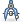

| 6.5. Measure | ||
|---|---|---|

|
6. Other |  |
| 6.5. Measure | ||
|---|---|---|
|
|
6. Other | |
The Measure Tool is used to gain knowledge about pixel distances in your working image. By clicking and holding the mouse button, you can determine the angle and number of pixels between the point of click and where the mouse pointer is located. The information is displayed on the status bar or can also be displayed in the Info Window.
When you pass the mouse pointer over the end point it turns to a move pointer. Then if you click you can resume the measure.
Information is displayed in the status bar, at the bottom of the Image window:
Distance between the original point and the mouse pointer, in pixels.
Angle, in every quadrant, from 0° to 90°.
Pointer coordinates relative to the original point.
You can get to the Measure Tool from the image-menu through: → ,
or by clicking the tool icon:  in Toolbox.
Holding down the Shift allows to start a new measure from the pointed point without deleting the previous measure. Angle is measured from the previous line and not from the default horizontal. The mouse pointer goes with a “+” sign. So, you can measure any angle on the image.
Holding down the Ctrl key puts the tool into constrained straight line mode. The orientation of the line is constrained to the nearest multiple of 15 degrees.
Ctrl key pressed and click on an end point
creates a horizontal guide. The mouse pointer goes with the
 icon.
icon.
Alt key and click on an end point creates a vertical guide. The mouse pointer goes with the icon.
This key combination and click on a measure line allows to move the measure.
Ctrl+Alt key combination and click on an end point creates a vertical and a horizontal guides.
This option will display an Info Window dialog that details the measure tool results. The results are more complete on the status bar.
You can't measure surfaces directly, but you can use the Histogram that gives you the number of pixels in a selection.